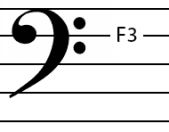

The second most common clef is the bass clef. It is an F-clef, since it is drawn so that the two dots are on either side of the F3 note. In the case of the bass clef, this means that the F occurs on the second line from the top.

Figure 2.4. Notice how two dots stand on both sides of the F3 note.
The notes of the bass clef lines are, from bottom to top:
G2, B2, D3, F3, A3
The notes of the spaces between those lines, from bottom to top, are:
A2, C3, E3, G3
So for the bass clef we have (bottom to top):
G2, A2, B2, C3, D3, E3, F3, G3, A3